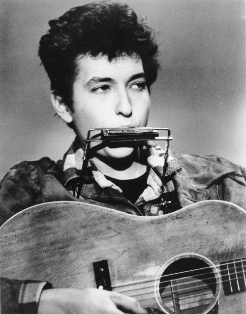

The Freewheeler
When Dylan was just 20 years old, he was introduced to his first record producer. A year later he would release his first self titled album. It consisted of several covers but with a unique twist. He also included a lot of originals that showed his instricate and percise picking.
The following year, in 1963 he would release his best selling album to this day, The Freewheelin' Bob Dylan. There was a lot more original songs on this album, all with great messages. He sung about depression and progression, and all the human struggles. He also sung of inspiration, and most prominently reformation. He didn't know at the time, but this would create a group following united in bringing back traditional music. He continued and often was the crowd favorite and the Newport Folk Festival, which he singlehandedly brought back. He describes the music he made in his youth later on in an interview as "magic".
